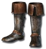

Set - Heyday
The Raven's Nest
5 items, level 80

The Raven's Talons
Leather Gloves
Defense: 2-3
Required Level: 10
+5-10% Faster Cast Rate
+5-10% to All Resistances
+5-10 to all Attributes
(2 items) +15% Cold Resistance
(3 items) +15% Cold Resistance
(4 items) +15% Faster Cast Rate

The Raven's Feet
Chain Boots
Defense: 8-9
Required Level: 10
+25 Defense
+10% to All Resistances
+10% Faster Run/Walk Speed
+10-25% Chance Items Roll Magic or Better
(2 items) +30% Faster Run/Walk Speed
(3 items) +75 Defense

The Raven's Wing
Barbed Shield
Defense: 58-78
Chance to Block: 17%
Required Level: 45
+100% Enhanced Defense
20-30% Increased Chance of Blocking
+20-30% Faster Block Rate
+20-30% Faster Cast Rate
+20% Faster Run/Walk Speed
+20-30% to All Resistances
+2 to Raven Hits
(2 items) +15 Cold Damage Absorbed
(4 items) +30% Cold Resistance

The Raven's Beak
Stiletto
Damage: 19-36
Required Level: 60
+2 to All Skills
+10-20% Faster Cast Rate
+15-30% Faster Hit Recovery
+15-30% Increased Attack Speed
+1 Ignore Target's Defense
+2 Hit Blinds Target
+2 to Raven Hits
(3 items) +20% Faster Cast Rate

The Raven's Feathers
Wyrmhide
Defense: 364-470
Required Level: 80
+100-125% Enhanced Defense
+300-500 Defense vs. Missile
+20% Faster Run/Walk Speed
+2-5 to Warmth
Physical Damage Reduced By 10-15
Magic Damage Reduced By 10-15
+1 to All Skills
(2 items) +10% Cold Damage Absorbed
(3 items) +1 Cannot Be Frozen
(4 items) +5% to Maximum Cold Resistance
Set bonuses
- 2 items: +20% to All Resistances, +1 + Max Ravens, - Max Wolves
- 3 items: +5 to Raven (class only)
- 4 items: +20% to All Resistances, +1 + Max Ravens, - Max Wolves
Full set
- +50% to Raven Damage
- +1 to Amplify Damage
- +20% Physical Damage Reduction
- +10% Magic Damage Absorbed
- +30% Faster Cast Rate
- +20% to All Resistances